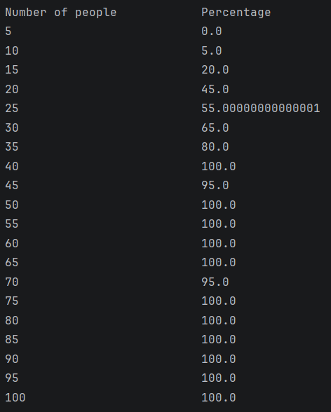

My name is Gregory Monzon and I am a third-year computer science student at the University of San Diego. Originally from Los Angeles, I am learning as much as I can about this ever-changing field. I have taken courses in software design, machine learning, and AI. However, my dream is to get into cybersecurity. I hope to get an internship in the summer of 2026 and learn more about computer science in the workplace. Connect with me on LinkedIn.
I have experience with Java, Python, and some HTML/CSS. I have used my skills in multiple projects, including a website for the Museum of Prague, and an FDA illness tracker. Smaller projects include an AI that discerns a square from a circle. I am an Eagle Scout. I have experience in leadership especially with children. When I was in a situation where a student had trouble understanding a concept and was falling behind, I would always step up to give that student extra attention until he or she understood the concept. I wish to learn from a computer internship and apply what I learned to make something useful as well as guide others who do not completely understand.
For fun, I like to practice the banjo. I hope to get good enough to play the best bluegrass songs. I also practice cybersecurity on the website TryHackMe.com.

In a room of 23 people, there is a 50% chance that two people share a birthday. I created a project that simulates this theory and outputs the odds of a same birthday in a room of 1-100 people.
For each person in the room (in multiples of five), the program randomly generates a month and day. Each new birthday is compared to an existing one, and the number of matches is recorded. The percentages are slightly different each time the program is run.
Project design
Implementation
This project is a simulation of a multi-elevator system in a building. The goal was to design and implement a system where different types of elevators work together to efficiently service requests while following specific constraints.
The simulator supports multiple elevator types, including standard, freight, penthouse, and express elevators. Each type follows its own rules for which calls it can accept and how it moves throughout the building.
A scheduler is responsible for assigning calls to elevators. Two strategies were implemented: a simple scheduler that assigns calls from left to right, and a complex scheduler that selects the elevator that can service the request in the fewest simulation rounds.
The simulation runs step-by-step, where each round assigns at most one call and moves every elevator one floor. The program continues until all calls are completed and all elevators return to the ground floor.
This project emphasized object-oriented design principles, including abstraction, inheritance, encapsulation, and polymorphism. It also involved implementing test-driven development and working collaboratively using GitHub.
gmonzon05@gmail.com